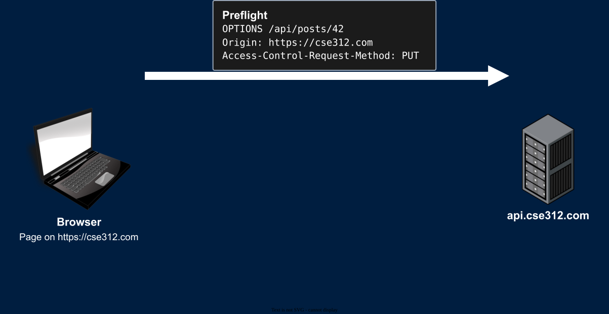
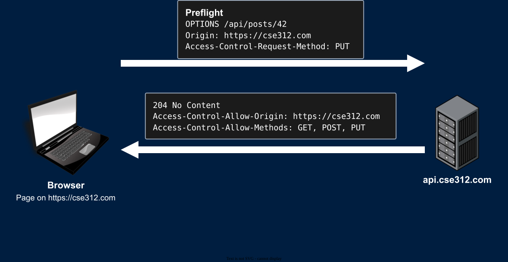
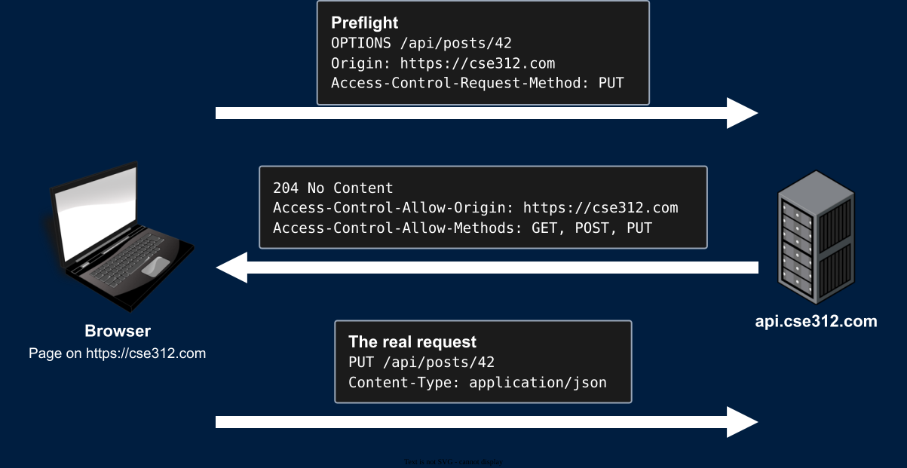

SameSite controls whether cookies are attached to cross-site requestscse312.com and your API is at api.cse312.com (Different origins!)Access-Control-Allow-* headers


OPTIONS /api/posts/42 HTTP/1.1
Host: api.cse312.com
Origin: https://cse312.com
Access-Control-Request-Method: PUT
Access-Control-Request-Headers: content-typeOrigin - The origin of the page that wants to send the requestAccess-Control-Request-Method - The method of the real requestAccess-Control-Request-Headers - The non-safelisted headers the real request will include
Content-Type is listed here since application/json is not one of the 3 simple typesHTTP/1.1 204 No Content
Access-Control-Allow-Origin: https://cse312.com
Access-Control-Allow-Methods: GET, POST, PUT, DELETE
Access-Control-Allow-Headers: Content-Type
Access-Control-Max-Age: 600Access-Control-Allow-Origin must match the requesting origin (or be *)Access-Control-Max-Age - The browser can cache this approval for 600 secondsAccess-Control-Allow-Origin
Access-Control-Allow-Origin: https://cse312.com
https://cse312.com may read this responseAccess-Control-Allow-Origin: cse312.com does not workAccess-Control-Allow-Origin: *
Origin header of the requestAccess-Control-Allow-OriginVary: Origin so caches don't serve one origin's response to another originfetch does not send cookies
fetch(url) uses credentials: "same-origin"fetch(url, {credentials: "include"})
SameSite)Access-Control-Allow-Credentials: trueAccess-Control-Allow-Origin with an exact origin
* is not allowed with credentialsAccess-Control-Allow-Origin: * cannot leak data that requires a logged-in usercurl, Python's requests, and an attacker's own scripts ignore CORS entirely
*. It's this:# DON'T: Trusts every origin, with cookies
response.headers["Access-Control-Allow-Origin"] = request.headers["Origin"]
response.headers["Access-Control-Allow-Credentials"] = "true"origin.endswith("cse312.com") allows https://freemoney4you-cse312.comstate parameter<form action="https://bank.com/api/transfer" method="post" enctype="text/plain">
<input type="hidden" name='{"to": "attacker", "amount": 10000, "x": "' value='"}'>
</form>text/plain form sends name=value with no encoding{"to": "attacker", "amount": 10000, "x": "="}Content-Type: application/json
fetch<iframe>, but not from embedding one<iframe>
Content-Security-Policy: frame-ancestors 'self'SameSite cookies also help: A cross-site iframe doesn't get Lax or Strict cookiesOrigin - The origin of the page that sent the request (Sent on cross-origin requests and on POSTs)Sec-Fetch-Site - same-origin, same-site, cross-site, or none (The user typed the URL)Origin isn't yours, or Sec-Fetch-Site is cross-sitecurl can set any header, but then there are no victim cookiesHttpOnly, so JavaScript can read it)GET requests never change stateSameSite=Lax or SameSite=Strict on auth cookies. ExplicitlysecretsSameSite and the SOP can't helpstate parameter is an XSRF token